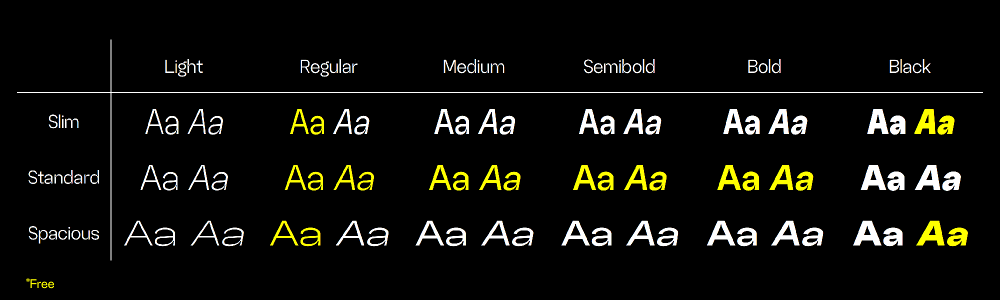
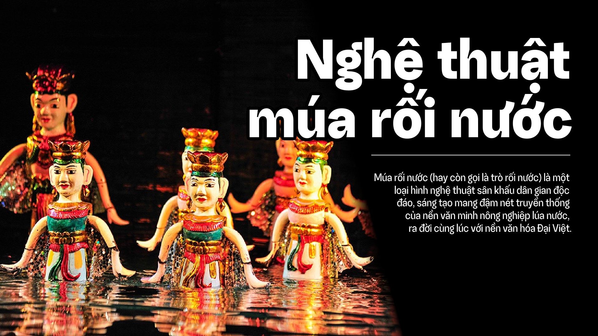
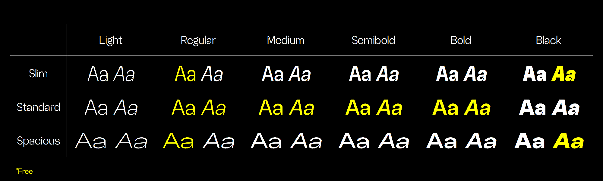
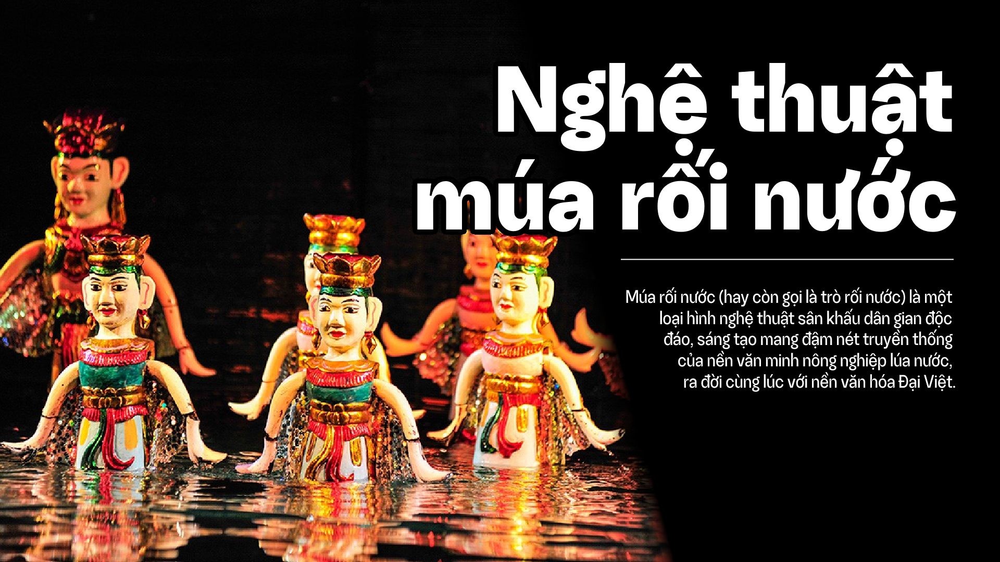
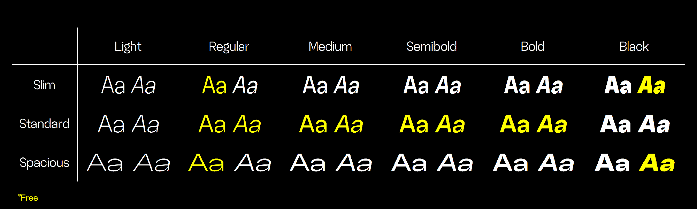
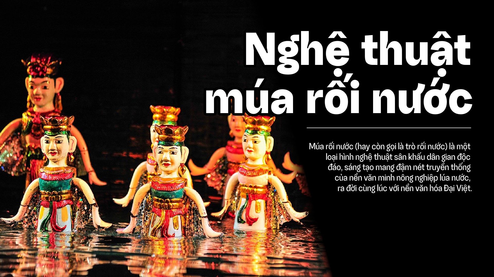
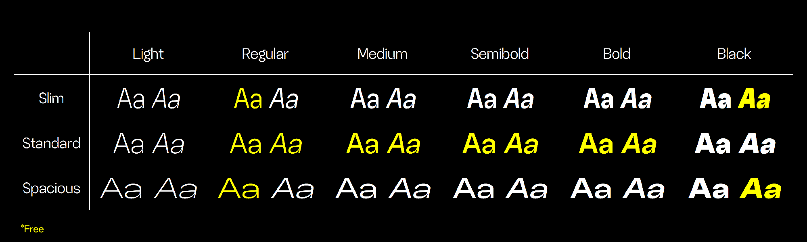
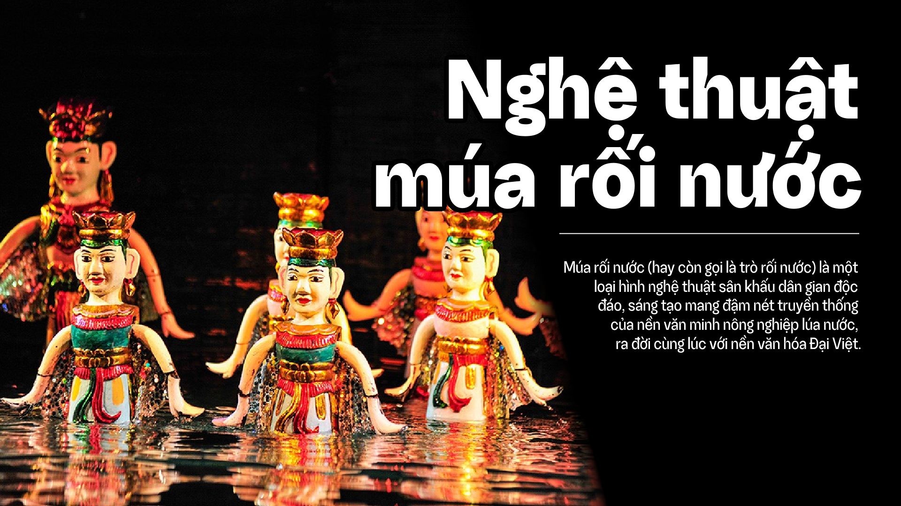

 



Random Grotesque is a multifunctional grotesque sans-serif typeface. It was originally designed to capture the feel of Helvetica but still maintain its unique personality. The most distinguishable feature is the inktrap. Random Grotesque is great for posters, logos, headings, titles, subtitles, or text blocks of different sizes.
The whole family consists of 36 styles, with 3 widths: Slim, Standard, and Spacious; 6 weights ranging from Light to Black; Upright and Italic. 12 fonts will be free for personal and commercial uses.
Designers
Year
License
Classification
Styles
Glyphs
Languages
RandomMaerks
2022 – 2023
RM-EULA Type-C
Sans-serif
36
749
Abaza, Acheron, Achinese, Acholi, Achuar, Shiwiar, Afar, Afrikaans, Aguaruna, Ahtna, Alekano, Aleut, Alonquin, Amahuaca, Amarakaeri, Amis, Anaang, Andaandi, Dongolawi, Anuta, Aragonese, Arbëreshë Albanian, Asháninka, Ashéninka Perené, Balinese, Banjar, Bari, Basque, Batak Dairi, Batak Karo, Batak Mandailing, Batak Simalungun, Batak Toba, Belarusian, Bemba (Zambia), Bena (Tanzania), Bikol, Bini, Bislama, Borana, Arsi, Guji Oromo, Bosnian, Breton, Buginese, Bulgarian, Candoshi, Shapra, Caquinte, Caribbean Hindustani, Cashibo, Cacataibo, Cashinahua, Catalan, Cebuano, Central Aymara, Central Kurdish, Chachi, Chamorro, Chavacano, Chiga, Chiltepec Chinantec, Chinese Buriat, Chokwe, Chuukese, Cimbrian, Cofán, Cook Islands Māori, Cornish, Corsican, Creek, Crimean Tatar, Croatian, Czech, Danish, Dehu, Dutch, Eastern Arrernte, Eastern Oromo, Efik, English, Erzya, Faroese, Fijian, Filipino, Finnish, French, Friulian, Galician, Ganda, Garifuna, German, Gheg Albanian, Gilbertese, Gooniyandi, Gourmanchéma, Guadeloupean Creole French, Gusii, Haitian, Halh Mongolian, Hani, Hiligaynon, Hopi, Huastec, Hungarian, Hän, Icelandic, Iloko, Inari Sami, Indonesian, Irish, Italian, Ixcatlán Mazatec, Jamaican Creole English, Japanese, Javanese, Jola, Fonyi, K'iche', Kabuverdianu, Kaingang, Kala Lagaw Ya, Kalaallisut, Kalenjin, Kamba (Kenya), Kaonde, Kaqchikel, Karachay, Balkar, Karelian, Kashubian, Kazakh, Kekchí, Kenzi, Mattokki, Khasi, Kikuyu, Kimbundu, Kinyarwanda, Kirghiz, Kituba (DRC), Kongo, Konzo, Kumyk, Kven Finnish, Kölsch, Ladin, Ladino, Latgalian, Lithuanian, Lombard, Low German, Lower Sorbian, Lozi, Luba, Lulua, Lule Sami, Luo (Kenya and Tanzania), Luxembourgish, Macedonian, Makonde, Malagasy, Malaysian, Maltese, Mandinka, Mandjak, Mankanya, Manx, Maore Comorian, Maori, Mapudungun, Marshallese, Matsés, Mauritian Creole, Meriam Mir, Meru, Minangkabau, Mirandese, Mohawk, Moksha, Mongolian Buriat, Montenegrin, Munsee, Murrinh, Patha, Mwani, Mískito, Naga Pidgin, Ndonga, Neapolitan, Ngazidja Comorian, Niuean, Nobiin, Nogai, Nomatsiguenga, North Ndebele, Northern Kurdish, Northern Qiandong Miao, Northern Sami, Northern Uzbek, Norwegian, Nyanja, Nyankole, Occitan, Ojitlán Chinantec, Orma, Oroqen, Otuho, Palauan, Pampanga, Papantla Totonac, Papiamento, Paraguayan Guaraní, Pedi, Picard, Pichis Ashéninka, Piemontese, Pijin, Pintupi, Luritja, Pipil, Pite Sami, Pohnpeian, Polish, Portuguese, Potawatomi, Purepecha, Páez, Quechua, Romansh, Rotokas, Rundi, Russian, Russian Buriat, Rusyn, Samoan, Sango, Sangu (Tanzania), Saramaccan, Sardinian, Scots, Scottish Gaelic, Sena, Serbian, Seri, Seselwa Creole French, Shawnee, Shipibo, Conibo, Shona, Shuar, Sicilian, Silesian, Slovak, Slovenian, Soga, Somali, Soninke, South Ndebele, Southern Aymara, Southern Qiandong Miao, Southern Sami, Southern Sotho, Spanish, Sranan Tongo, Standard Estonian, Standard Latvian, Standard Malay, Sundanese, Swahili, Swedish, Swiss German, Tagalog, Tahitian, Tedim Chin, Tetum, Tetun Dili, Toba, Tok Pisin, Tokelau, Tonga (Tonga Islands), Tonga (Zambia), Tosk Albanian, Tumbuka, Turkish, Tuvalu, Tuvinian, Tzeltal, Tzotzil, Uab Meto, Ukrainian, Umbundu, Ume Sami, Upper Guinea Crioulo, Upper Sorbian, Venetian, Veps, Vietnamese, Võro, Walloon, Walser, Waray (Philippines), Warlpiri, Wayuu, West Central Oromo, Western Abnaki, Western Frisian, Wiradjuri, Wolof, Xhosa, Yanesha', Yao, Yucateco, Zapotec, Zulu, Zuni, Záparo